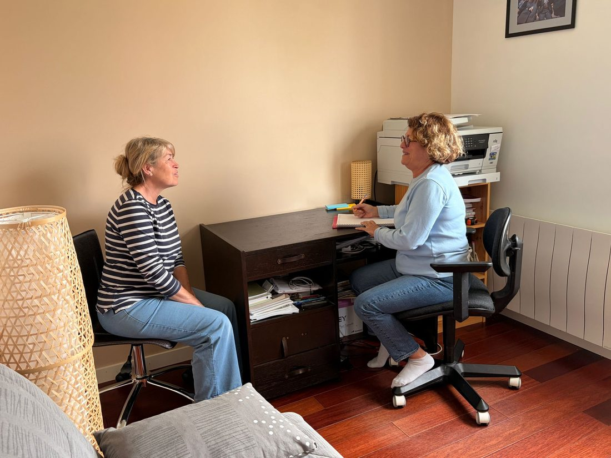

Grâce à mon double parcours, j'accompagne les particuliers pour retrouver une harmonie de vie durable, et je réponds aux enjeux stratégiques des entreprises en matière de Qualité de Vie et des Conditions de Travail à travers des ateliers sur-mesure pour leurs collaborateurs.
Découvrez l'histoire qui m'a guidée vers la sophrologie.
Diplômée en psychologie du travail, j'ai consacré l'essentiel de ma carrière dans le domaine des Ressources Humaines, où j'ai pu observer et travailler en cohérence avec l'individu et son environnement de travail.
Durant mes dix dernières années d'activité, j'ai occupé le poste de Responsable Qualité de Vie au Travail. Cette mission m'a permis d'agir concrètement sur la prévention des risques psychosociaux et l'amélioration du bien-être au travail.
Devenir sophrologue s'est imposé à moi comme une évidence, une suite logique de mon parcours professionnel.
Si la psychologie m'a apporté la compréhension des mécanismes mentaux et les RH la vision systémique de l'entreprise, la sophrologie me permet aujourd'hui d'intégrer en plus la dimension corporelle et de faire le lien entre l'esprit et le corps, pour retrouver équilibre et bien-être.
Mon objectif est de permettre à chacun de développer son potentiel et ses ressources personnelles.
J'accompagne mes clients vers une meilleure connaissance d'eux-mêmes, pour leur permettre d'aborder leur quotidien avec plus de calme et de clarté.
La sophrologie apporte aux personnes que j'accompagne une véritable boîte à outils leur permettant de devenir autonomes dans leur pratique.

Ma pratique s'articule aujourd'hui autour de deux axes complémentaires : l'accompagnement des particuliers et l'intervention en entreprise.
Conçue par le neuropsychiatre Alfonso Caycedo, la sophrologie s'inspire de techniques occidentales et orientales. Tiré du grec ancien, son nom signifie littéralement « étude de l'harmonisation de la conscience ».
C'est une méthode psychocorporelle, exclusivement verbale et non tactile. Vous êtes uniquement guidé(e) par ma voix à travers quatre piliers simples :
La sophrologie est une thérapie brève qui agit sur le corps et le mental. Elle ne se substitue en aucun cas à un traitement médical, mais intervient comme un accompagnement complémentaire.
Son ambition est de vous permettre d'accéder à un mieux-être durable en vous rendant pleinement acteur et autonome. En activant votre potentiel et vos ressources personnelles, elle vous donne les clés d'une meilleure connaissance de vous-même pour vivre votre quotidien avec sérénité et confiance.
L'objectif final : vous transmettre, au fil des séances, des outils simples à intégrer à votre quotidien. C'est cette pratique régulière qui permet le changement dans la durée.
Je propose d'accompagner les adultes, les séniors et les adolescents. La sophrologie offre des outils concrets pour répondre à de nombreux besoins de la vie quotidienne, personnelle ou professionnelle.
Chaque accompagnement est personnalisé pour vous aider à surmonter vos défis actuels et à activer vos propres ressources. Voici les principaux motifs de consultation :
La sophrologie est une thérapie brève qui agit sur le corps et le mental. Elle ne se substitue en aucun cas à un traitement médical, mais intervient comme un accompagnement complémentaire.
Toutes mes séances sont personnalisées en fonction de votre objectif pour vous permettre d'acquérir une meilleure connaissance de vous-même.
La première séance est l'occasion de préciser vos attentes, de définir votre objectif et de commencer quelques exercices. Elle dure environ 1h30.
Présentation de la séance et accueil de vos ressentis du moment.
Composés de mouvements doux, debout ou assis.
Où vous serez installé(e) confortablement.
Échange final sur vos ressentis vécus durant les exercices.
Mon rôle est de vous transmettre des techniques concrètes que vous pourrez réutiliser seul(e), à tout moment de votre vie. La sophrologie n'est pas un soin que l'on reçoit passivement : c'est une pratique active que l'on s'approprie au fil des séances.
Une approche globale pour la prévention des risques psychosociaux, le bien-être et la performance de vos équipes.
Investir dans la sophrologie, c'est investir dans la ressource la plus précieuse de votre entreprise : l'humain. Aujourd'hui, face à des rythmes toujours plus soutenus, une forte sollicitation mentale et des changements fréquents, la santé mentale et le bien-être au travail sont devenus de véritables enjeux stratégiques pour les dirigeants et les DRH.
Intégrer la sophrologie dans votre démarche QVCT (Qualité de Vie et des Conditions de Travail), ce n'est pas seulement proposer un moment de détente ponctuel. C'est déployer une approche globale et pragmatique pour offrir à vos équipes des ressources concrètes, utiles et immédiatement applicables dans leur quotidien professionnel.
La sophrologie s'inscrit pleinement comme une action de prévention primaire au sein de votre DUERP (Document Unique d'Évaluation des Risques Professionnels).
La sophrologie agit en prévention ou en complément d'une politique de gestion des risques psychosociaux (RPS) et offre aux collaborateurs bien-être et sérénité au quotidien.
Chaque entreprise peut ainsi proposer la sophrologie régulièrement à ses collaborateurs ou utiliser cet outil dans le cadre de la résolution d'une problématique ponctuelle. La sophrologie doit faire partie d'une palette d'outils RH afin d'améliorer ses actions en termes de qualité de vie et conditions de travail (QVCT), mais elle ne peut en aucun cas se substituer à une politique engagée de prévention des risques professionnels dans leur ensemble.
Parce que chaque organisation a ses propres contraintes, je propose des interventions sur-mesure, pensées de manière concrète et progressive pour coller à la réalité du terrain.
Idéaux pour une intégration simple dans l'organisation quotidienne, sans perturber l'activité de vos équipes.
Hebdomadaires, mensuelles ou sous forme de cycles thématiques : gestion du stress, respiration, sommeil et vigilance…
Durant la Semaine de la QVCT (découverte de la sophrologie).
Accompagnements individuels en fonction des situations rencontrées.
Mes interventions sur site se déroulent exclusivement à Paris et en Île-de-France.
Mon approche : une méthode psycho-corporelle (respiration, détente physique et psychique, pensée positive et visualisation) accessible à tous, sans prérequis et sans tenue spécifique. Les outils transmis sont directement réutilisables en toute autonomie sur le poste de travail.
Parce que l'accompagnement en sophrologie repose avant tout sur une relation de confiance, je m'engage au quotidien à vous offrir un cadre sécurisant, bienveillant et professionnel.
Je m'engage au respect strict des règles de confidentialité et de non-jugement. Que ce soit lors des séances individuelles ou en groupe, chaque échange reste confidentiel.
Vous disposez d'un espace d'écoute entièrement sécurisé pour vous exprimer librement, à votre rythme, sans crainte d'être jugé(e).
Mon objectif est de vous accompagner vers un mieux-être durable en vous transmettant des techniques concrètes.
À la fin de nos séances, je vous partage les fiches des exercices de relaxation dynamique pratiqués ensemble. Vous pouvez ainsi les réaliser en toute autonomie.
Vous pourrez adapter facilement les exercices appris aux événements de votre vie, pour vous accompagner durablement au-delà des séances.
J'adhère scrupuleusement au code de déontologie qui régit la profession de sophrologue. À ce titre, la sophrologie vient en complément et ne se substitue jamais à la médecine générale ou spécialisée.
Si vos besoins dépassent mon champ de compétences, je n'hésiterai pas à vous orienter vers votre médecin traitant ou un professionnel de santé adapté.
Un premier temps d'écoute et d'échange pour définir ensemble votre objectif, à votre domicile ou en visio.
Déplacements à domicile : Chennevières-sur-Marne,
Champigny-sur-Marne, Ormesson-sur-Marne, Saint-Maur-des-Fossés, Sucy-en-Brie.
Visio : partout en France.
N'hésitez pas à me contacter par téléphone ou par mail.
Premier rendez-vous, 1h30
*Un calcul personnalisé des frais de déplacement vous sera proposé lors de la prise de rendez-vous.
Séance de suivi, 1h
*Un calcul personnalisé des frais de déplacement vous sera proposé lors de la prise de rendez-vous.
Moyens de paiement acceptés : espèces, virement, chèque.
Certaines mutuelles acceptent de rembourser les séances de sophrologie — en savoir plus.
💼 Pour les entreprises, les tarifs sont établis par devis selon le format et la durée.
Je vous réponds sous 48h. Toutes les informations partagées restent strictement confidentielles.
Non, la sophrologie est accessible à tous, quel que soit votre âge ou votre condition physique. Les exercices se pratiquent debout ou assis.
Cela dépend de votre objectif. En moyenne, 6 à 10 séances suffisent pour observer des changements durables.
La sophrologie n'est pas remboursée par la Sécurité Sociale, mais certaines mutuelles proposent une prise en charge partielle. En savoir plus.
Oui, la sophrologie se prête très bien à la visio. C'est une excellente option si vous êtes éloigné(e) ou en déplacement.